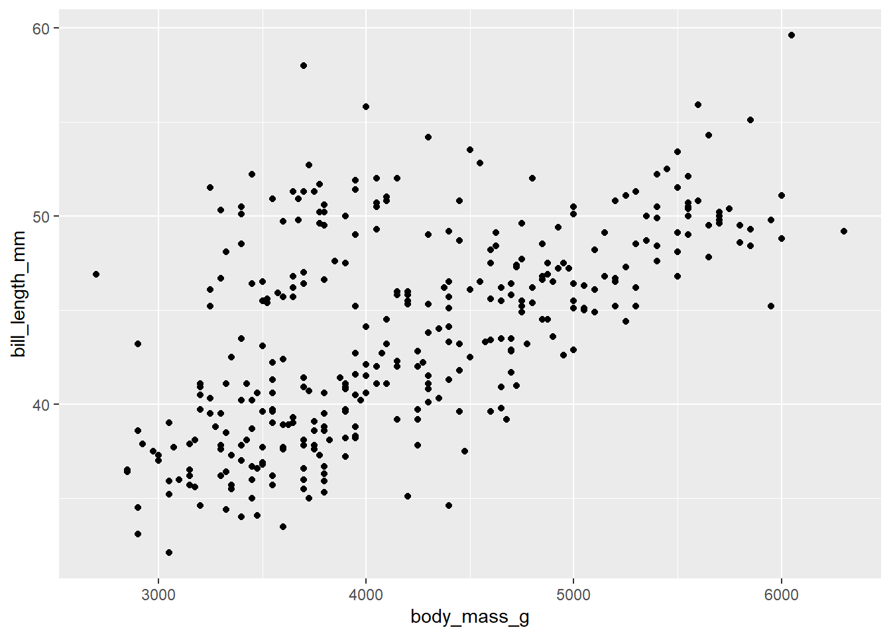

Basics of Quarto
Quarto: Everything in One Place
Quarto allows you to have your narration (text) side-by-side your code. Everything stays together in a single document. To learn more about Quarto, visit https://quarto.org.
Quarto is the newer version of R Markdown. The biggest difference is that Quarto does not require that you use R, and was developed to be multilingual (Python, Javascript, Julia, etc.) Quarto is otherwise very similar to R Markdown when using the visual editor. The difference between R Markdown and R Notebooks is that R Markdown files will execute the code all at once, while only one line is sent at a time in a Notebook.
This next section is a brief example of a report we might write about our penguins data. What follows after that section is how to use this Quarto document.
Penguins data
Today we will use data from the palmerpenguins package. palmerpenguins provides size measurement data for 344 penguins from three species.

The plot below shows the relationship between body mass and bill lengths of these penguins.
How to use a Quarto Document
Render
Use the Render button (at the top, with the blue arrow) to preview the output. You can also Render on Save so that you render the document every time you save. When you “render” the document, Quarto creates a new document with all your text and code. There are various formats including HTML, PDF, and MS Word, and it can also create presentations, books, and more. Today we will use HTML output.
–> Render the document by clicking on Render.
What goes into a Quarto Document
Quarto documents have three kinds of content: a YAML header, code chunks, and markdown text.
YAML Header
The YAML header specifies global (i.e., document-level) options and it can do a few things. It can dictate the final file format, as well as the style of the document. It can set which editor you want to use. It can also handle some simple metadata like title, author, and date. It begins and ends with three dashes: - - -
---
title: "Basics of Quarto"
format: html
editor: visual
---The basic syntax is key: value. There are many possible keys, and your final format will influence which keys you might want to use. You can find all the keys for common file formats used for reports here: HTML, PDF, and MS Word.
Code Chunks
You put your code inside of “code chunks.” In Quarto, code chunks start with {r} with (optional) code chunk options that have #| at the beginning of the line and have the key: value YAML format.
If we scroll to the top, we can see a code chunk that loads our libraries. We labeled the chunk load-packages and set include to false so that it does not show up in our rendered documents.
We can also run each code chunk one at a time, but pressing the green triangle button in the upper right of the code chunk (“Run Current Chunk”), or pressing CTRL/CMD+SHIFT+ENTER.
–> Run the code chunk for the penguins plot.
Markdown text
Lastly, Quarto relies on markdown syntax to format text. You can include things like section headers, links, images, inline code, and citations. We will explore that more in the next file.
If you use the visual editor, you won’t need to learn too much markdown. If you use the source editor, knowing some markdown would be helpful.
–> Below, type two hashtags (##) plus a space, then type Conclusion. Now we have a “Header 2” section heading.
Conclusion
–> Try formatting this word: BOLD. Use the toolbar, a keyboard shortcut (CTRL/⌘+B), or markdown (** bold ** - but remove the spaces between the asterisks and the word).
–> Render the document one more time.